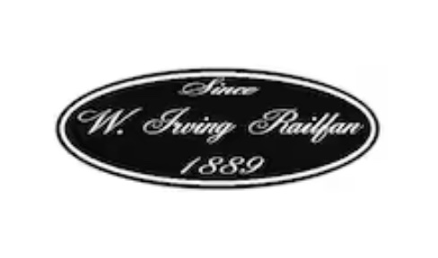

WIRailfan — Scale Model Macabre
WIRailfan creates detailed HO scale miniature scenes inspired by historic, cinematic, and infamous locations. Each handcrafted build blends storytelling, architecture, and atmospheric realism for serious collectors and model rail enthusiasts.
Visit the WIRailfan Etsy Shop